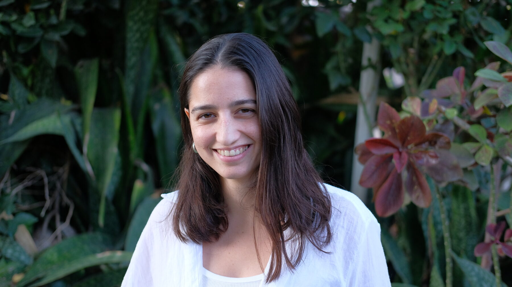
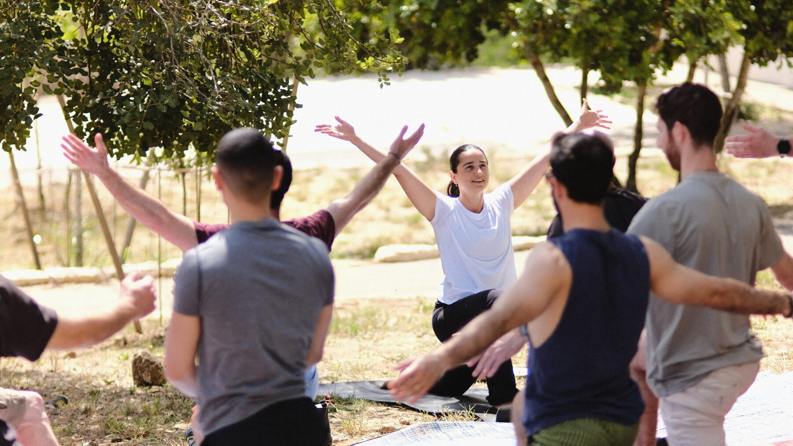

סדנה לקבוצה
קבוצה של חברות, משפחה, צוות או ארגון. אנחנו קובעות יחד מתי ואיפה — אצלי או אצלכן — ואני מגיעה עם כל הציוד.
לכל הסדנאותאני יובל דורון אבייב — נטורופתית מוסמכת, ארומתרפיסטית ומורה ליוגה. אני מלווה נשים בתהליכי החיים דרך טיפולים הוליסטיים, סדנאות ותנועה, בקליניקות בתל אביב ובעמק האלה.

קבוצה של חברות, משפחה, צוות או ארגון. אנחנו קובעות יחד מתי ואיפה — אצלי או אצלכן — ואני מגיעה עם כל הציוד.
לכל הסדנאות
טיפול שמותאם אישית לצרכים שלך, לפי הסיבה שהביאה אותך. אנחנו מתחילות בשיחה טלפונית מקדימה, ומשם בוחרות יחד את הדרך. לנשים, בקליניקה ובזום.
לקליניקהמגוון סדנאות חווייתיות, שמותאמות לרצון שלכן ולקבוצה.
נריח ונכיר שמנים אתריים איכותיים, נבין את ההבדלים ביניהם ונלמד איך להשתמש בהם בבית בצורה בטוחה ויעילה.
נכיר את ״בית המרקחת של הטבע״, ואחרי ההיכרות עם עולם השמנים נרקח יחד מוצרים מפנקים — וכל משתתפת לוקחת הביתה את מה שרקחה.
שיעור יוגה לכל הרמות, עם הקשבה לגוף ולנשימה — בסטודיו, במשרד או בחוץ.
שתי סדנאות מחוברות למפגש אחד ארוך יותר — למשל יוגה ואחריה ארומתרפיה.
מעת לעת נפתחות סדנאות במועדים קבועים, שאליהן אפשר להצטרף גם ללא קבוצה. לבירור המועדים הקרובים, אשמח לקבל הודעה.
לבירור מועדים
המסע שלי החל בשנת 2016, כשאובחנתי עם מחלת קרוהן. קיבלתי את התווית ״מחלה כרונית״, יחד עם המרשם הקבוע לשיכוך כאבים. משהו בתוכי המשיך לשאול — האם יש דרך אחרת?
המסע לריפוי הוביל אותי לחקירה עצמית, למידה מקצועית ואל עולמות הנטורופתיה והיוגה. גיליתי את העוצמה שבשילוב בין משאבי הטבע, מסורות רפואה עתיקות, ובעיקר — אמונה וחמלה עצמית.
לסיפור המלא ←לפני שנפגשות, אנחנו מדברות — כדי להבין מה הביא אותך ומה מתאים לך. משם בוחרות יחד את הטיפול. לנשים, בקליניקה בתל אביב ובעמק האלה, וגם בזום.
ליווי לאורך זמן דרך תזונה, צמחי מרפא ושינוי הרגלים.
טיפול מדויק בכפות הרגליים, המחוברות לכל הגוף.
התאמת שמנים אתריים לטיפול — במריחה, בהרחה או בבליעה.
מסע חושי עדין עם שמנים טהורים, שמתחיל מהריח ומגיע עד לנשמה.
טיפול אנרגטי במגע, לאיזון פנימי ושקט עמוק.
שיחה והתאמת תמצית פרחים לתמיכה רגשית.
שיחה, תערובת שמנים אישית, רייקי ורפלקסולוגיה עדינה — במפגש אחד.
היוגה לימדה אותי להתנהל מתוך הרפיה, לנשום, לרווח בין המחשבות ולחיות בנוכחות. בשבילי יוגה היא לא אימון, אלא תרגול אישי — אני והמזרן, הגוף והנפש.
תרגול אישי, קבוצות קטנות, ויוגה בחוץ לקבוצות ולצוותים.
לעמוד היוגה ←
משחות, שמנים וקרמים שאני רוקחת בעבודת יד — חלקם מוצרי מדף, וחלקם בהתאמה אישית. התאמת מוצרים טיפוליים נעשית בטיפול ארומתרפיה; התאמה של קרם פנים, למשל, אפשר לעשות גם מרחוק. וגם מארזי מתנה — לכלה, להריון, ללידה.


אני מקבלת בשתי קליניקות — בתל אביב ובעמק האלה. חלק מהמפגשים מתקיימים גם בזום, כך שאפשר להצטרף מכל מקום. סדנאות אני מעבירה במקום שנקבע מראש — אצלי או אצלכן, בכל הארץ.
סקרנתי אותך? מוזמנת ליצור איתי קשר
לשיחה בוואטסאפ